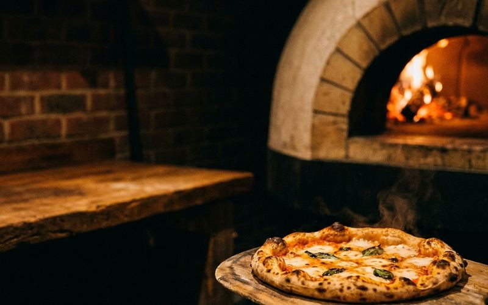
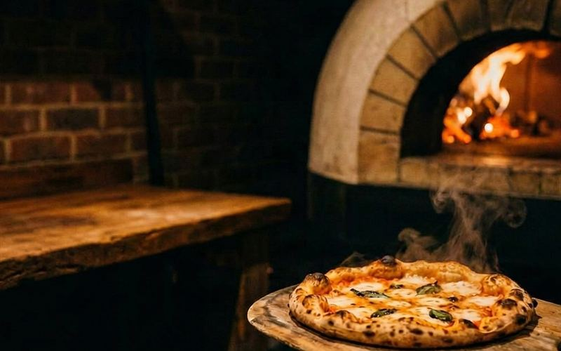

Consultando el horario…
El horno ya está a punto
Pizza a la piedra, masa de fermentación lenta de dos días y leña de verdad. Pedila y llevatela recién salida.
Pizza grande a la piedra · desde Gs. 55.000 · Barrio [barrio], Asunción
Cómo está hecha esta demo: arriba no hay ningún video. Son dos fotos reales del mismo momento, sacadas con un instante de diferencia, puestas una encima de la otra: la de arriba se desvanece y vuelve a aparecer cada seis segundos. Como lo único que cambió entre una y otra es el fuego del horno y el vapor de la pizza, el ojo lo lee como fuego que respira. Encima va una capa liviana de humo dibujado, nada más que para que el movimiento no se sienta mecánico.
Lo que se gana con el video: con una herramienta paga, esas mismas dos fotos se convierten en un video de 5 a 7 segundos. Ahí el movimiento es continuo —la llama nunca vuelve a la misma forma— en vez de ir y venir entre dos estados. A cambio pesa bastante más y hay que pagar la herramienta. Esta demo es la versión sin video, que ya resuelve el 80% del efecto.
Sobre las fotos: las dos fotos de esta demo están generadas con inteligencia artificial, porque es una demo. En la página de un cliente real van las fotos de su propio local, sacadas con el celular en el momento del servicio.
Cómo funciona
Dos fotos reales, cruzadas una sobre la otra, y una vuelta que nadie nota
No hay animación programada ni escena dibujada: son dos fotos del mismo horno sacadas con un instante de diferencia. La de arriba pasa de invisible a visible con una curva suave, y después vuelve por el mismo camino. Todo lo demás de la escena está quieto y alineado al píxel, así que lo único que se mueve es lo que realmente se movió.
Sacamos el cuadro A y el cuadro B
Mismo encuadre, celular apoyado, un instante de diferencia. La llama creció y el vapor subió. Nada más se movió.
Se cruzan una sobre la otra
La foto B va de opacidad 0 a 1 con una curva suave, no lineal. Arranca despacio, acelera al medio y frena al llegar. Eso es lo que hace que parezca fuego y no una transición.
La vuelta se hace por el mismo camino
De A a B y de B a A. Como termina exactamente donde empezó, el bucle no tiene costura: podés dejarlo horas y nunca se nota.

Cuadro A segundo 0

Cuadro B segundo 3
- 1La llama del horno crece y cambia de forma. En A es un resplandor bajo sobre la leña; en B se levanta y lame el techo del horno. Es el latido del fuego, no un efecto.
- 2El vapor de la pizza se agranda y se corre. En A es un hilo fino; en B ya se abrió y subió hasta la boca del horno. Es el movimiento que más se nota.
- 3Todo lo demás está quieto. El ladrillo, el mesón, la pala y la pizza no se mueven ni un píxel entre una foto y la otra. Por eso el cruce no se lee como una transición.
Arrastrá el control (o movelo con las flechas del teclado). De 0 a 3 segundos va de A a B; de 3 a 6 vuelve de B a A por el mismo camino. Cuando llega otra vez a A, arranca de nuevo sin ningún salto: por eso no se ve la costura.
El interruptor
Ida y vuelta, o una sola pasada con el corte a la vista
Son las mismas dos fotos en los dos casos. Lo único que cambia es cómo vuelve al principio. Probá los dos botones y mirá el momento en que reinicia. Con video pasa exactamente lo mismo: si el video no vuelve por donde vino, el corte se ve.
Ida y vuelta (ping-pong)
La foto de arriba se desvanece y vuelve a aparecer por el mismo camino. Termina exactamente en el estado con el que empezó, así que el salto no existe. Podés dejarlo horas y nunca se nota.
Una sola pasada (loop común)
Al llegar a B vuelve a A de un golpe: la llama cambia de forma en un solo cuadro y el vapor se achica de repente. Se ve un parpadeo, y el ojo lo agarra aunque el visitante no sepa explicarlo.
Estás viendo el modo ida y vuelta. Cambiá el interruptor para ver el problema que resuelve.
Con video y sin video
Qué se gana cuando en vez de dos fotos va un video
Las dos versiones salen de las mismas dos fotos de tu local. La diferencia es si se cruzan en el navegador o si antes pasan por una herramienta que arma el video del medio.
Esta demo
Dos fotos que se alternan
- El movimiento va y viene entre dos estados. La llama tiene dos formas y las repite.
- Pesa unos 280 KB entre las dos fotos. Carga en cualquier conexión.
- No necesita ninguna herramienta paga. Se hace con las fotos y doce líneas de código.
- Si el visitante se queda mirando un rato largo, puede llegar a notar que son dos estados.
Con herramienta paga
Un video de 5 a 7 segundos
- El movimiento es continuo: la llama nunca vuelve a la misma forma dos veces.
- Pesa entre 1 y 2 MB. Hay que cuidar más la carga y siempre lleva imagen de respaldo.
- Necesita una herramienta paga que genera el video a partir de tus dos fotos. Se cobra aparte.
- El ida y vuelta se hornea dentro del archivo: A → B → A en un solo video.
Si recién arrancás, la versión de dos fotos alcanza y sobra. El video conviene cuando la portada es la pieza del negocio y querés que aguante que la miren fijo.
Ficha técnica en criollo
Qué hay que saber antes de poner movimiento en la portada
Cuánto pesa cada opción
Las dos fotos de esta demo, ya comprimidas, suman unos 280 KB. Un video de 6 segundos, sin sonido y bien comprimido, arranca en 1 MB y se va cómodo a 2 MB: entre cuatro y siete veces más.
Con video se suben dos versiones: una vertical y liviana para el celular y una ancha para la computadora. Nadie descarga la que no le toca.
Objetivo: que el titular y el botón estén antes que el fondoPor qué el video va mudo
No es una decisión de gusto: ningún navegador deja que un video arranque solo con audio. Si lleva sonido, no se reproduce y el visitante ve un cuadro quieto donde iba tu horno.
Aparte, el que abre tu página en la parada del colectivo no quiere que le suene el celular. Un fondo es fondo: se mira, no se escucha.
Por qué va en bucle
Un fondo que se reproduce una vez y queda congelado envejece la página en cinco segundos: el visitante que llega tarde ve una foto fija y no entiende qué pasó. El bucle infinito hace que la portada esté siempre viva, entre a la hora que entre.
Y el bucle tiene que ser de ida y vuelta, o exportado para que el último cuadro sea igual al primero. Si no, cada vuelta trae un parpadeo.
Siempre lleva imagen de respaldo
La imagen de respaldo (el poster) es un cuadro del propio video, pesa entre 60 KB y 120 KB, y es lo primero que se ve. Si el video no llega a cargar, la portada igual se ve entera y linda.
Hace falta más seguido de lo que parece: datos justos, señal mala, ahorro de batería prendido (en iPhone el modo de bajo consumo directamente no reproduce solo), o el visitante pidió menos movimiento en la configuración del teléfono. En todos esos casos queda la foto fija.
Sin respaldo, un rectángulo negro donde iba tu localAsí está hecha esta demo (sin video)
<div class="portada">
<img src="pizzeria-a.jpg" width="1600" height="1000" alt="…">
<img src="pizzeria-b.jpg" width="1600" height="1000" alt="" id="foto-b">
</div>
<!-- las dos apiladas con position:absolute. Lo único que se anima es
la opacidad de foto-b, de 0 a 1 y de vuelta, con curva suave -->Y así queda con el video (herramienta paga)
<video autoplay muted loop playsinline
preload="metadata"
poster="pizzeria-a.jpg"
aria-hidden="true">
<source src="horno-pingpong.webm" type="video/webm">
<source src="horno-pingpong.mp4" type="video/mp4">
</video>
<!-- el poster es el cuadro A: si algo falla, queda la misma foto -->autoplayArranca solo, sin que el visitante toque nada.mutedSin sonido. Es la condición para que elautoplayfuncione.loopVuelve a empezar al terminar, para siempre.playsinlineQue se reproduzca dentro de la página. Sin esto, el iPhone lo abre a pantalla completa y te arruina la portada.preload="metadata"Baja lo mínimo primero. El texto y el botón de WhatsApp aparecen antes que el video.posterLa imagen de respaldo que se ve mientras carga, o para siempre si el video no puede reproducirse.
Si el visitante tiene activado “reducir movimiento” en su teléfono, no se mueve nada: en la versión con video queda el poster, y en esta versión de dos fotos queda el cuadro A quieto. Probalo vos: prendé “reducir movimiento” y recargá.
Datos de ejemplo
Lo que iría en la página de la pizzería
Precios, horarios y carta de ejemplo, para que veas cómo queda la pieza acompañada del resto del contenido. En una página real van los tuyos.
- Mozzarella salsa de tomate, mozzarella y orégano Gs. 55.000
- Napolitana tomate en rodajas, ajo y albahaca fresca Gs. 65.000
- Cuatro quesos mozzarella, provolone, azul y parmesano Gs. 78.000
- Tatatĩ especial panceta ahumada al horno, cebolla morada y rúcula Gs. 82.000
- Media pizza + gaseosa para uno, de lunes a jueves Gs. 38.000
Horarios
Martes a jueves y domingo, de 18:30 a 23:30. Viernes y sábado, de 18:30 a 00:30. Lunes cerrado.
El cartelito verde de la portada se calcula con la hora del propio visitante: si entra un lunes ve “cerrado” y cuándo abrís de nuevo. No hay que tocar nada a mano.
Cómo se pide
Todo por WhatsApp: elegís, mandás el mensaje y pasás a retirar. El botón de la portada abre el chat con el pedido ya escrito.
Delivery en la zona de [barrio] y alrededores, con un recargo de [monto]. Los datos entre corchetes se completan con los del negocio.